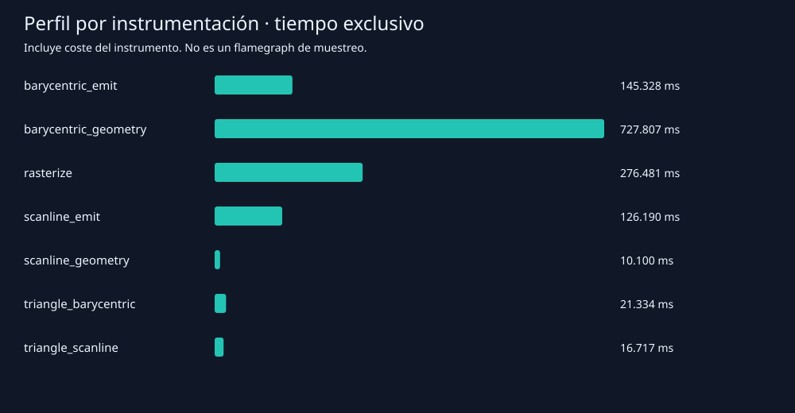

GRÁFICAS POR COMPUTADORA · RUST
Un triángulo, tres modos
Imágenes generadas por el programa sobre un framebuffer de 640 × 480. Ambos rellenos incluyen el centro del píxel cuando coincide con una arista.
01 · Contorno / Bresenham
02 · Relleno baricéntrico 03 · Relleno scanline
03 · Relleno scanline
Comparación exacta
Cero posiciones diferentes en los siete casos del enunciado. Cada relleno genera 172.419 fragmentos por ejecución. Se aprobaron seis tests, incluyendo 2.000 triángulos subpíxel adicionales y permutaciones de vértices.
Mediciones
Nueve rondas de 100 ejecuciones, compilación optimizada y sin instrumentación. Las cifras siguientes corresponden a la ejecución entregada; los CSV se actualizan al repetir el benchmark.
| Modo | Mediana por ejecución | Fragmentos |
|---|
| Contorno | 0,029115 ms | 3.962 |
| Baricéntricas | 8,780444 ms | 172.419 |
| Scanline | 2,219865 ms | 172.419 |
Rondas completas · Comparación por caso · Informe y comandos
Perfil por instrumentación
Registro real de tiempos por ámbitos en una ejecución separada. La geometría domina en el relleno baricéntrico; la emisión domina dentro del relleno scanline. El perfil incluye sobrecoste del instrumento.

Datos completos del perfil